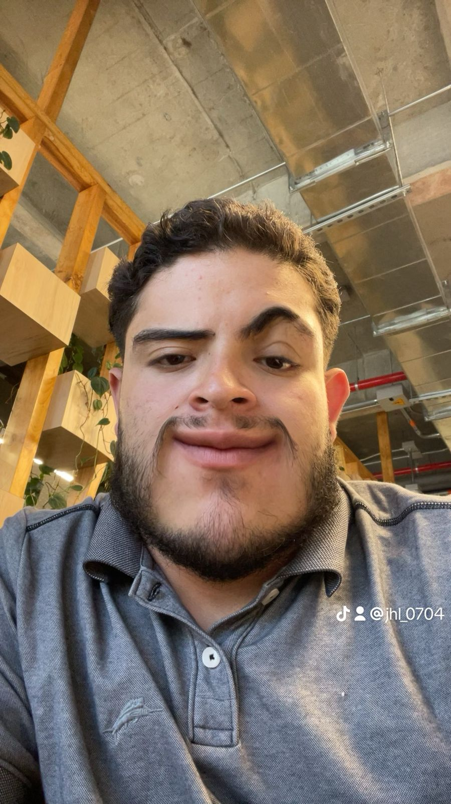
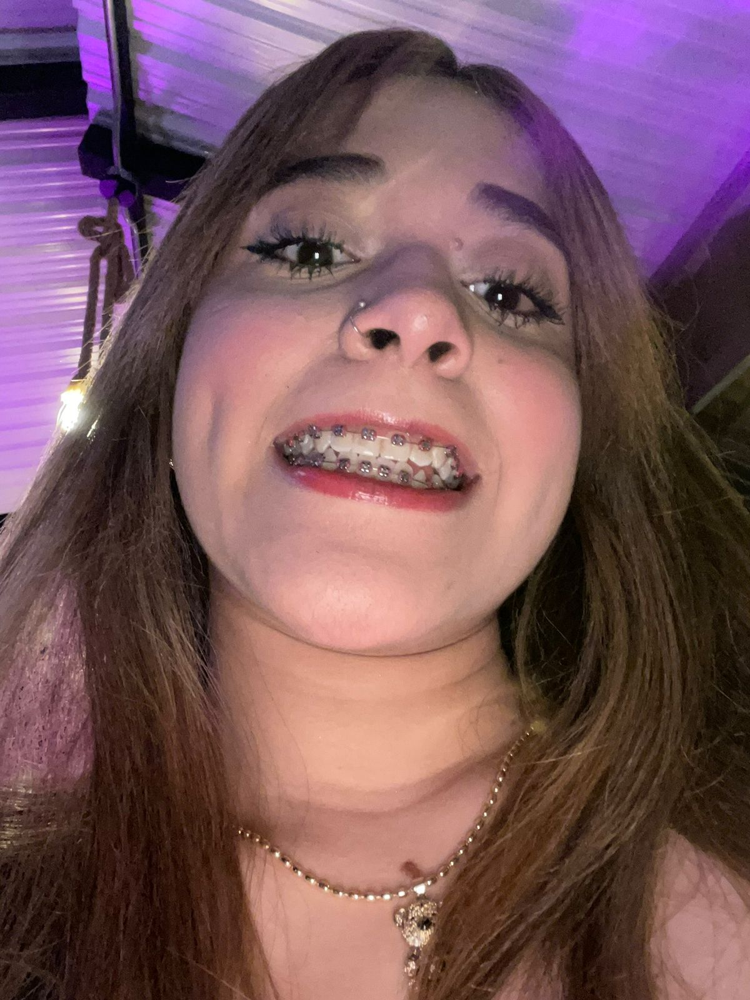
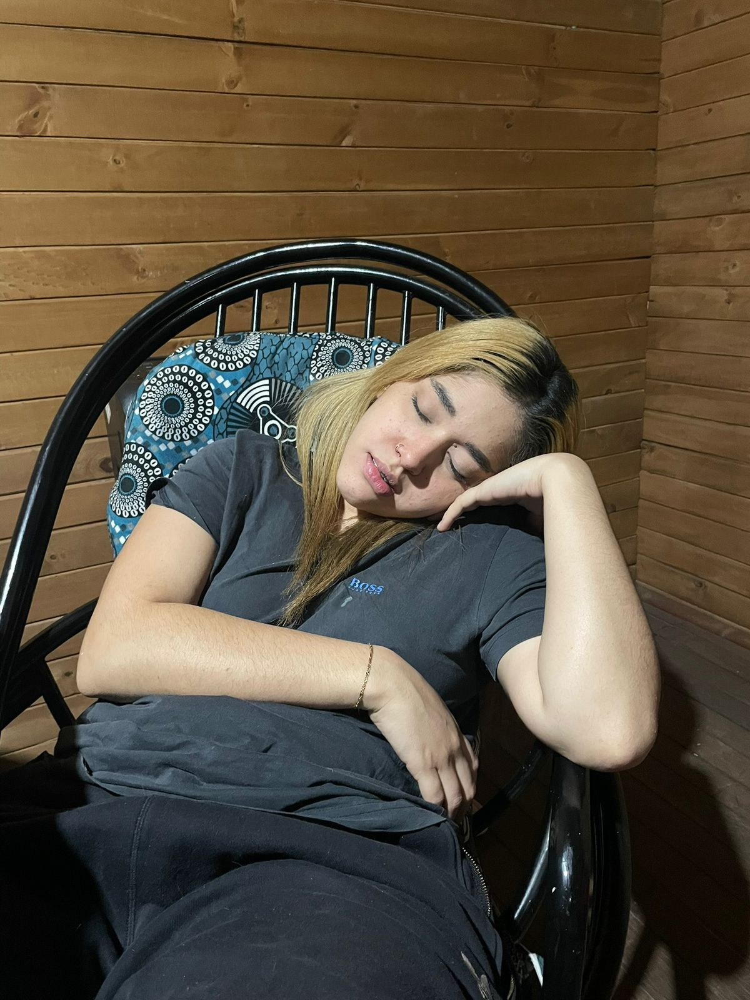

Esta sección está hecha para acompañarte con frases bonitas en cada sentimiento o momento que vivas. Aquí podrás encontrar unas palabras mías para recordarte que, sin importar la situación, estoy a tu lado dándote apoyo. Está diseñada exclusivamente para ti, mi princesa, con todo mi amor.


